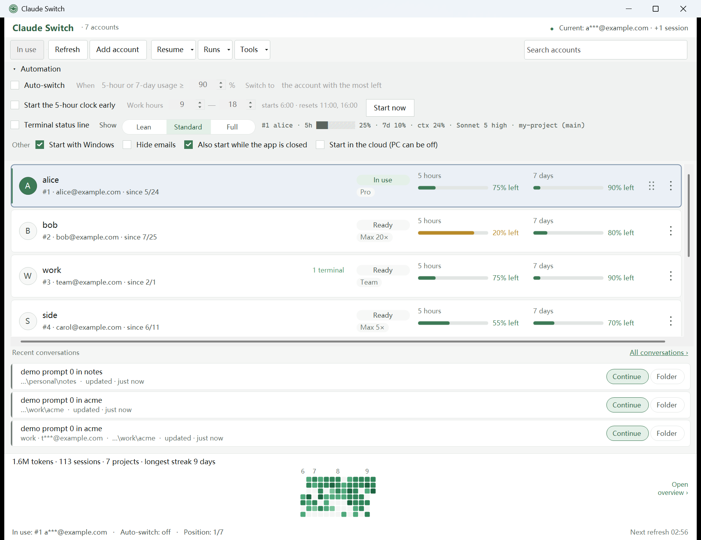
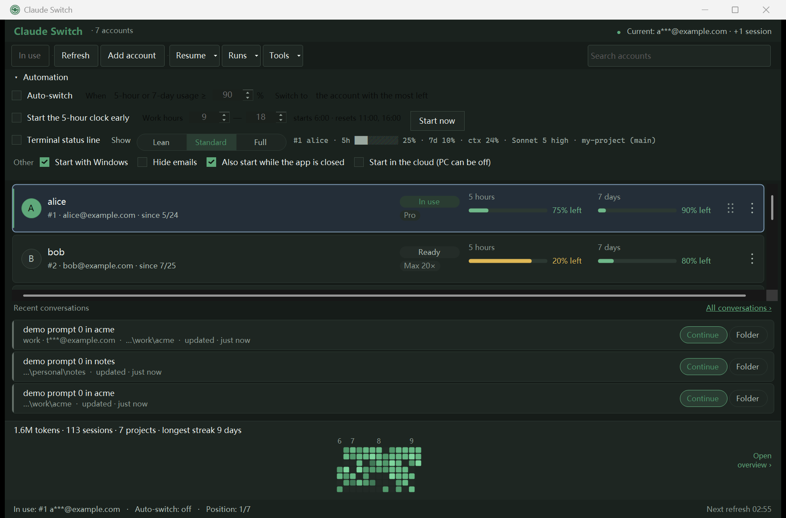
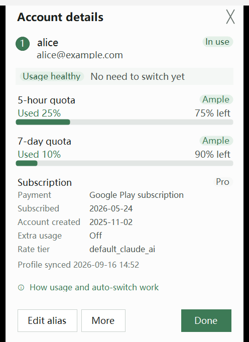
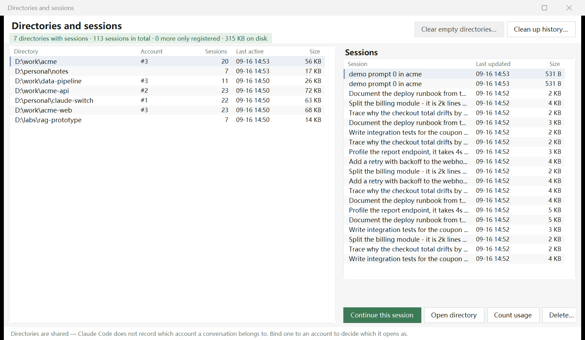
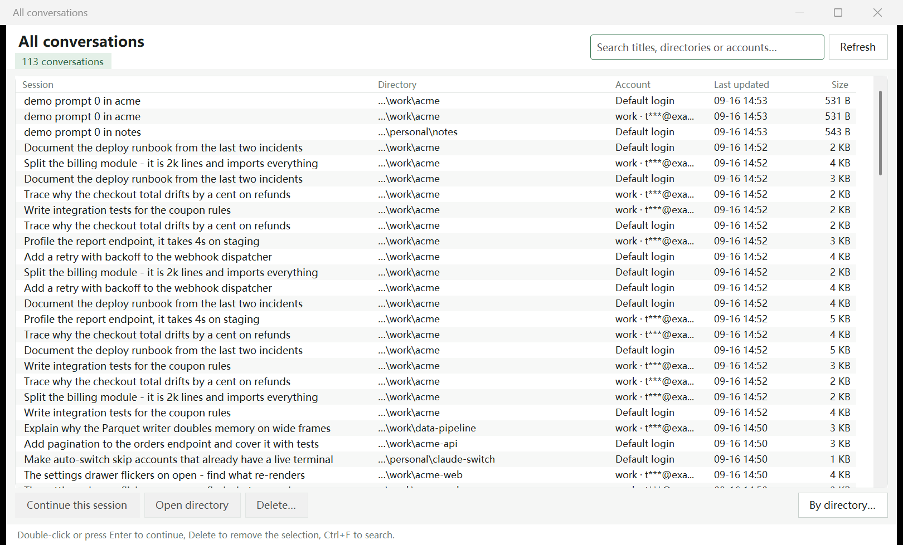
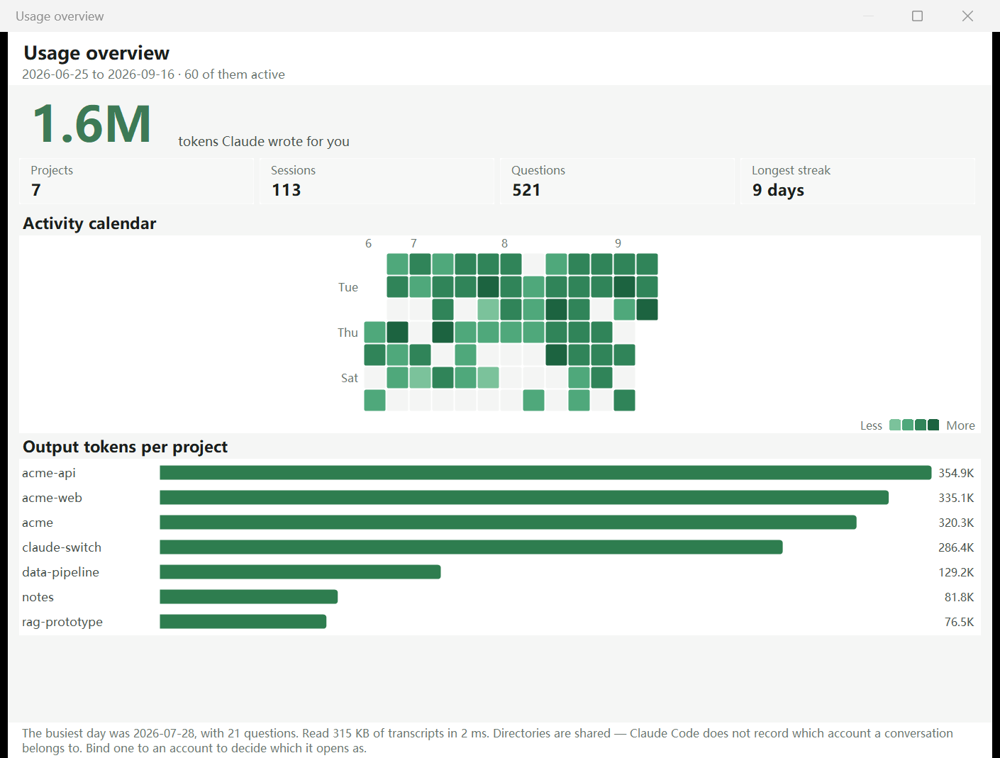
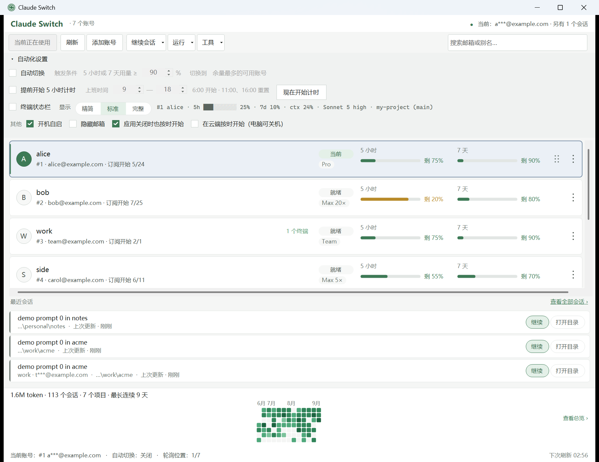

Windows tray app · for Claude Code
Windows 托盘应用 · 为 Claude Code 而写
Hit the limit.
Keep writing.
额度撞墙，
继续写。
Claude Switch watches the 5-hour and 7-day window on every account you own. When one runs dry it hands the work to the account with the most left — while Claude Code is still running, in the session you are in.
Claude Switch 盯着你每个账号的 5 小时与 7 天窗口。一旦某个账号见底，它把活儿交给余量最多的那个——Claude Code 不用重启，正在进行的会话继续往下写。


The switch
切换这件事
A switch that lands on the session you are already in
切换落在你正在用的那个会话上
On Windows, Claude Code's credentials are files. Claude Switch takes its three locks, writes the new credentials and the matching .claude.json, and releases them. Your next message goes out on the new account.
在 Windows 上，Claude Code 的凭据就是文件。Claude Switch 拿到三把锁，写入新的凭据和对应的 .claude.json，然后释放。你发出的下一条消息就走新账号了。
Without it
没有它的时候
- 01The 5-hour limit hits mid-task and Claude Code stops.
- 02Export credentials from the other account, swap the files.
- 03Restart Claude Code. Reopen the editor tabs.
- 04Re-explain where you were.
- 01干到一半 5 小时限额到了，Claude Code 停住。
- 02去另一个账号导出凭据，手动换文件。
- 03重启 Claude Code，重新打开编辑器标签页。
- 04再把上下文讲一遍。
With Claude Switch
有 Claude Switch
- 01Usage crosses the threshold you set.
- 02It picks the healthiest account that can actually work.
- 03Credentials are swapped under a three-lock transaction.
- 04You keep typing.
- 01用量越过你设的阈值。
- 02它挑一个真正还能干活、余量最多的账号。
- 03在三把锁的事务里换掉凭据。
- 04你继续打字。
No restart. No reopened tabs. The running session picks it up on the next message.
不重启、不重开标签页。正在跑的会话，下一条消息就生效。
Auto-switch
自动切换
It switches on a full window — and on a broken account
窗口满了会切，账号坏了也会切
A threshold alone would leave you stranded on an account whose login just died. Failover covers the cases a percentage never catches.
只看百分比，是会把你困在一个刚刚掉登录的账号上的。故障转移接住的正是这些百分比看不见的情况。
- Your threshold, either window. Default 90% of the 5-hour or the 7-day quota, whichever fills first.
- 你的阈值，两个窗口都算。默认 5 小时或 7 天用量达到 90%，谁先到算谁。
- Broken is a reason too. Dead login, gone subscription, empty slot — it moves on instead of waiting for a number.
- 「坏了」也是切换理由。登录失效、订阅没了、槽位是空的——它直接换，而不是干等一个数字。
- Only accounts with measured usage. A slot it cannot read is skipped, never ranked first as "100% free".
- 只切到量得出用量的账号。读不到的槽位会被跳过，绝不会因为「100% 空闲」而排到第一。
- Accounts with a live terminal are left alone. Their quota is already being spent by that terminal.
- 已经有终端在跑的账号会被让开。那个终端正在花它的额度。

.claude.json backup — read locally, no request goes out..claude.json 备份——本地读取，不发任何请求。Parallel sessions
并行会话
Different accounts in different terminals, at the same time
同一台机器，不同终端跑不同账号
Right-click an account card, pick a directory, and a new terminal runs Claude Code logged into that account. Your default login, your other terminals and the VS Code extension carry on untouched.
右键一张账号卡，选个目录，就会开出一个用该账号登录的 Claude Code 终端。默认登录、其它终端和 VS Code 插件完全不受影响。
- Bind a directory to an account. Opening that folder — from Resume or from Directories — uses it automatically. Subfolders inherit the nearest binding.
- 把目录绑定到账号。从「继续会话」或「目录」里打开这个文件夹时，自动用那个账号。子目录继承最近的绑定。
- Your config is shared, not forked.
settings.json,CLAUDE.md, skills, commands, agents and user-level MCP servers re-sync from~/.claudeon every start — edit them there. - 配置是共享的，不是分叉。
settings.json、CLAUDE.md、skills、commands、agents 和用户级 MCP 服务器每次启动都从~/.claude重新同步——要改就改那里。 - History is merged, never copied. Copying transcripts would fork them; instead every view scans all profiles and shows each directory once.
- 历史是合并展示，不做复制。复制会话记录等于把历史分叉；所以各个视图扫描全部配置目录，每个目录只出现一次。

Proxy & region
代理与地区
Each account on its own exit, in its own time zone
每个账号走自己的出口，用自己的时区
Some accounts only work through one proxy node, and Claude Code shows times in the zone it is told, not the Windows one. Right-click a card → Proxy & region… sets both for that account.
有的账号只能从某个代理节点出去；而 Claude Code 显示时间用的是配置里告诉它的时区，不是 Windows 的。右键账号卡 →「代理与地区…」，为这个账号把两样都设好。
- System, custom or direct. System follows the app proxy, then the machine's. Terminals and agents opened as the account get it in their environment, and it goes into the account's
settings.jsontoo, so Claude Code's background workers match. - 系统、自定义或直连。「系统」先跟随本软件的全局代理，没设再用本机的。以该账号打开的终端和 agent 在环境变量里拿到它，账号自己的
settings.json里也会写入，Claude Code 的后台进程同样生效。 - Time zone and language from the exit. Detect from exit probes the proxy's exit IP and fills them in; presets cover the common regions. They become
timeZoneandlanguage, plusTZandLANGfor what this app launches. - 按出口定时区和语言。「按出口探测」会探测代理的出口 IP 并自动填好；常见地区也有预设。写入为
timeZone和language，本软件启动的进程还会带上TZ和LANG。
- Nothing carries over. Follow the system removes the keys, so one account's region never sticks to the next. When the account is the default login,
~/.claude/settings.jsongets the same keys, so aclaudeyou start yourself sees them. - 不会串到别的账号。选「跟随系统」会删掉这些键，上一个账号的地区不会留给下一个。该账号是默认登录时，
~/.claude/settings.json也写入同样的键，你自己敲的claude同样能看到。 - One app-wide proxy. Tools → App proxy… covers this app's own requests — usage refresh, exit detection — and every account left on System.
- 一个全局代理。「工具 → 全局代理…」管本软件自己的请求（刷新用量、出口探测），以及所有设为「系统」的账号。
Terminal status line
终端状态栏
Which account is this terminal on?
这个终端，现在跑在哪个账号上？
The one thing Claude Code's own status line cannot answer. A line at the bottom of every terminal, from a checkbox — three presets, no widget editor.
这正是 Claude Code 自带状态栏答不上来的问题。一个复选框，就在每个终端底部多出一行——三档预设，没有第四个旋钮。
> add pagination to the orders endpoint ⏺ working… #2 work · 5h 38% · Sonnet 5 high
> add pagination to the orders endpoint ⏺ working… #2 work · 5h ████░░░░░░ 38% · 7d 12% · ctx 24% · Sonnet 5 high · my-project (main)
> add pagination to the orders endpoint ⏺ working… #2 work · 5h ████░░░░░░ 38% · 7d 12% · ctx 24% · Sonnet 5 high · my-project (main) 5h resets 14:30 · 7d resets Fri 09:00 · spare #3 ops 8% · auto 90% · $1.24 42m
Model, thinking effort, context and cost come from Claude Code's own payload; the account, the windows and the spare come from Claude Switch. Data sources →
模型、思考强度、上下文和花费来自 Claude Code 自己的数据；账号、窗口和备用账号来自 Claude Switch。数据来源 →
- No Node, no runtime. A ~750 KB native binary that reads three local files and exits. No network, no
gitsubprocess. - 不需要 Node，不需要运行时。一个约 750 KB 的原生程序，读三个本地文件然后退出。不联网，不跑
git子进程。 - Per terminal, not per machine. A terminal opened for one account names that account, not the default login.
- 按终端，不按机器。为某个账号开的终端，显示的就是那个账号，而不是默认登录。
- Your
settings.jsonis respected. Only thestatusLinekey is merged in; a file that does not parse is left alone, and another status line is never replaced without asking. - 尊重你的
settings.json。只合并statusLine这一个键；解析不了的文件原样不动；已有的其它状态栏，不问过你绝不替换。
Conversations
会话
One step back into the last conversation
一步回到上一次的对话
The toolbar dropdown and the tray menu list recent sessions per directory. The full window searches every conversation on the machine, whichever account happened to run it.
工具栏下拉和托盘菜单按目录列出最近会话。完整窗口则搜索这台机器上的全部对话——不管当时是哪个账号跑的。

- Resume opens in the terminal you pick. Tools → Terminal… — Automatic uses Windows Terminal when it is installed; Warp, WezTerm, Ghostty, Alacritty, Tabby and others can be chosen instead.
- 「继续」在你选的终端里打开。「工具 → 终端…」——「自动」在装了 Windows Terminal 时就用它；也可以改选 Warp、WezTerm、Ghostty、Alacritty、Tabby 等。
- Directories are account-agnostic. Claude Code does not record which account owned a conversation — the Account column is the binding you set, not a guess.
- 目录本身与账号无关。Claude Code 不记录一段对话属于哪个账号——「账号」列是你设的绑定，不是推测。
- Token counts are computed on demand. Reading every transcript takes a few hundred milliseconds; nothing leaves the machine.
- token 统计按需计算。读完全部会话记录通常几百毫秒；没有任何数据离开这台机器。
- Clean-up is explicit. Old conversations, empty directories and their spilled files are removed only when you ask.
- 清理是显式的。旧对话、空目录和它们散落的文件，只在你要求时才删。
Usage overview
使用总览
What you actually did in Claude Code
你到底用 Claude Code 干了多少活
Output tokens, an activity calendar, a bar per project and your longest streak — read from the transcripts already on your disk, across every account.
输出 token、活跃日历、每个项目一根柱子、最长连续天数——全部来自你磁盘上已有的会话记录，跨所有账号。
- Cache tokens are left out of the charts on purpose: they are hundreds of times larger and would swamp everything else.
- 图表刻意不算缓存 token：它们比别的大上百倍，画进去别的就全没了。
- Per directory too. Questions per day and output per session, for one project.
- 也能按目录看。某个项目的每日提问数和每次会话的输出量。

--fixture mode.--fixture 演示数据。Interface
界面
English or 简体中文, light or dark, without a restart
中英文、浅色深色，切换都不用重启
The main window, the cards and the status bar re-label themselves immediately; other windows pick the language up the next time they open. First launch follows the system language; after that, your choice is remembered.
主窗口、卡片和状态栏立刻改写文案；其它窗口下次打开时跟上。首次启动跟随系统语言，之后记住你的选择。

Install
安装
There is no installer
它没有安装程序
A portable executable: no registry writes, no admin rights. Put it anywhere; delete it to uninstall. Launch-at-login is a checkbox in the app.
一个绿色可执行文件：不写注册表，不要管理员权限。放哪儿都行，删掉就算卸载。开机自启是应用里的一个复选框。
Windows SmartScreen will warn on first run. This program is not code-signed — a certificate costs hundreds of dollars a year and has not been bought. Click More info → Run anyway. Files extracted from the zip carry the Mark of the Web too, so the zip does not skip that prompt.
首次运行时 Windows SmartScreen 会拦一下。程序没有做代码签名——证书一年要几百美元，暂时没买。点「更多信息」→「仍要运行」。从 zip 解压出来的文件同样带 Mark of the Web，所以 zip 也绕不开这个提示。
One exception to "no install": the .NET single-file bundle unpacks its runtime to %TEMP%\.net\ClaudeSwitch\ on first launch. That is normal .NET behaviour, not an installation.
「不安装」的唯一例外：.NET 单文件包会在首次启动时把运行时解压到 %TEMP%\.net\ClaudeSwitch\。这是 .NET 的正常行为，不是安装。
Releases ship SHA256 checksums, so you can check what you downloaded:
Release 里附了 SHA256 校验值，可以核对下载到的文件：
Get-FileHash ClaudeSwitch.exe -Algorithm SHA256
Or build it yourself — these are the same steps CI runs. The native engine has to be built first, or the publish fails hard instead of shipping a binary that dies on launch.
或者自己从源码构建——CI 跑的就是这几步。必须先构建原生引擎，否则发布会直接失败，而不是产出一个一启动就死的程序。
# Rust 1.80+ and the .NET 8 SDK
cargo build -p claude-switch-ffi --release
dotnet publish gui-win/ClaudeSwitch.App/ClaudeSwitch.App.csproj \
-c Release -p:PublishSingleFileBundle=true -o dist
Where your data lives
数据放在哪里
Local files you can read, and a few named keys of Claude Code's
全是你能自己打开的本地文件；Claude Code 的配置只动几个指明的键
Usage figures are fetched per account with that account's own token — expired ones are refreshed first, and the token of the account you are logged in as is never rotated, because that would kick your live session. Requests honour HTTPS_PROXY, ALL_PROXY and NO_PROXY, and on Windows the system proxy settings as well, unless you set an app proxy.
用量是用每个账号自己的 token 各自拉取的——过期的会先刷新，而当前登录中的那个账号的 token 永远不轮换，否则会把你正在跑的会话踢掉。请求遵循 HTTPS_PROXY、ALL_PROXY、NO_PROXY，在 Windows 上还会读系统代理设置；设了全局代理则以它为准。
| Location | 位置 | Contents | 内容 |
|---|---|---|---|
| ~/.claude-swap-backup/credentials/ | Per-slot credentials (encrypted) | 每个槽位的凭据（加密） | |
| ~/.claude-swap-backup/configs/ | Per-slot .claude.json snapshots | 每个槽位的 .claude.json 快照 | |
| ~/.claude-swap-backup/sequence.json | Slot order, current account, each account's proxy & region | 槽位顺序、当前账号、每个账号的代理与地区 | |
| ~/.claude-swap-backup/settings.json | App settings: auto-switch, warmup, status line, app proxy | 本软件设置：自动切换、预热、状态栏、全局代理 | |
| ~/.claude-swap-backup/sessions/ | Per-account session profiles, each with its own history | 每个账号的会话配置目录，各自带历史 | |
| ~/.claude-swap-backup/mappings.json | Directory → account bindings (machine-local) | 目录 → 账号的绑定（只在本机） | |
| ~/.claude-swap-backup/bin/ | The status-line renderer, written when you turn that on | 状态栏渲染程序，开启该功能时写入 | |
| ~/.claude/settings.json | Claude Code's own file. Only these keys are ever written: statusLine (a copy is kept as settings.json.cswitch-bak), cleanupPeriodDays for history retention, and — for the default login's proxy & region — timeZone, language and the proxy, TZ and LANG entries under env. Everything else is kept. |
Claude Code 自己的文件。只会写这几个键：statusLine（并留一份 settings.json.cswitch-bak）、历史保留天数 cleanupPeriodDays，以及默认登录的代理与地区——timeZone、language 和 env 下的代理、TZ、LANG。其余内容原样保留。 | |
| %LOCALAPPDATA%\ClaudeSwitch\ | UI preferences: theme, language, hide-email | 界面偏好：主题、语言、是否隐藏邮箱 |
The layout is compatible with claude-swap, the Python CLI whose behaviour this follows — both can share one backup tree.
目录结构与 claude-swap（本项目行为所遵循的 Python CLI）兼容——两者可以共用同一份备份目录。
Move data
迁移数据
Take Claude's data off a full C: drive
C 盘满了？
把 Claude 数据搬走
Transcripts pile up in ~/.claude. Tools → Move Claude data… copies it, and this app's own tree, to another drive and leaves a directory junction at each old path — Claude Code, the VS Code extension and this app keep using the paths they know.
会话记录全堆在 ~/.claude 里。「工具 → 迁移 Claude 数据…」把它连同本软件自己的目录拷到另一块盘，并在原路径各留一个目录联接（junction）——Claude Code、VS Code 插件和本软件照旧用原来的路径。
- Both folders move, or neither does. It refuses while Claude Code is running and checks again after copying. The originals are renamed aside only when nothing holds a file open, whatever changed meanwhile is copied again, and any failure puts both back.
- 两个文件夹要么一起搬，要么都不动。Claude Code 在运行时拒绝迁移，拷完还会再查一次。只有没有程序占用文件时才把原文件夹改名挪开，期间的改动会补拷；任何一步失败，两个都放回原处。
- Your links come along. A
commands/folder orCLAUDE.mdlinked from a dotfiles repo is recreated at the new location — not copied, not dropped. - 你的链接一起带走。从 dotfiles 仓库链接进来的
commands/或CLAUDE.md会在新位置重建——不复制内容，也不丢掉。 - Undo brings back today's data. The C: originals stay until you delete them, and Undo copies the current data back — everything since the move included — before it removes the links.
- 还原拿回的是现在的数据。C 盘上的原文件夹一直留到你删除为止；「还原」会先把当前数据——包括迁移后的全部改动——拷回来，再去掉链接。
- A destination that stays put. An empty folder on a fixed NTFS drive, readable only by you, SYSTEM and Administrators. USB and network drives are refused.
- 目标位置不会跑掉。固定 NTFS 磁盘上的空文件夹，只有你、SYSTEM 和管理员能读。U 盘和网络盘会被拒绝。
Stop babysitting the limit
别再盯着额度了
Download it, add the accounts you already have, tick Auto-switch. That is the whole setup.
下载，把你已有的账号加进去，勾上「自动切换」。设置到此为止。